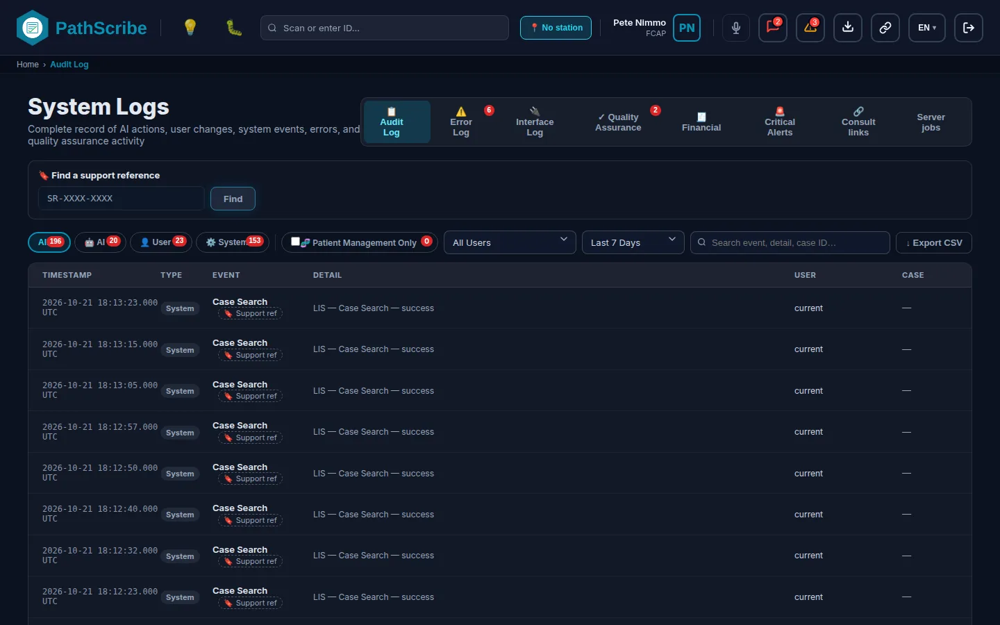
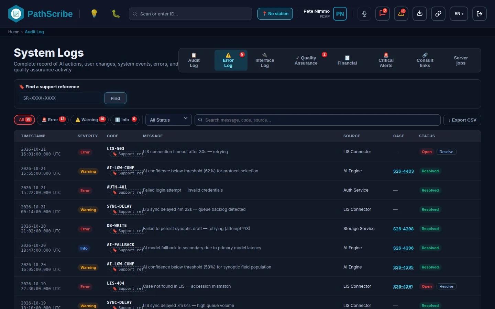

# Annexes : Dépannage et vérification du journal d'audit
Ce chapitre comprend trois parties. La première est une matrice de dépannage : les problèmes que rencontre le plus souvent un administrateur, chacun avec sa cause et l'écran qui permet de le corriger. La deuxième est un index des codes d'erreur que PathScribe affiche ou enregistre. La troisième décrit l'écran Journaux système et donne un guide pas à pas pour vérifier le contenu du journal d'audit. Le glossaire des termes est le dernier chapitre du guide (Glossaire).
Chaque message cité ici est le texte français du produit. Chaque code existe dans le code source ; un code qui n'est qu'un espace réservé dans un contrat, sans usage dans le produit, n'est pas répertorié.
# Matrice de dépannage
Statut : Réalisé
Utilisation de la matrice. Repérez le symptôme signalé par l'utilisateur, lisez la cause probable et appliquez la correction. La plupart des signalements « ça ne fonctionne pas » relèvent de l'une de deux causes : un dictionnaire qui n'a jamais été configuré (une liste vide), ou un rôle qui ne détient pas une capacité (un bouton grisé ou un enregistrement refusé). Lorsque le symptôme affiche un code en majuscules, cherchez-le dans l'index des codes d'erreur.
Avant toute chose. Deux vérifications répondent à la plupart des questions.
- Ouvrez les Journaux système et recherchez le nom de la personne ou la clé de la capacité. Un contrôle d'autorisation refusé écrit une entrée Capability refused qui nomme la capacité et le rôle de session de la personne.
- Consultez l'onglet Journal des erreurs pour y trouver une erreur ouverte avec un code, une source et une heure proches du signalement.
# Listes vides et messages « non configuré »
Une liste déroulante vide ou un message « aucun configuré » signifie presque toujours qu'un dictionnaire placé plus tôt dans l'ordre de configuration a été ignoré. La page Ordre de configuration indique cet ordre.
| Symptôme (ce que voit l'utilisateur) | Cause probable | Correction | Écran |
|---|---|---|---|
| Dans la fenêtre d'équipe d'un dossier : Aucun type de participation configuré, avec l'indication « Configurez les types dans Système → Types de participation. » | Aucun type de participation n'existe. | Ajoutez les types utilisés par le laboratoire, puis rouvrez la fenêtre. | Types de participation |
| Une impression de test ou une fenêtre d'étiquette indique Aucun profil d'imprimante configuré. | Aucun profil d'imprimante n'a été ajouté. | Ajoutez un profil d'imprimante pour chaque modèle d'imprimante d'étiquettes. | Profils d'imprimante |
| Un poste d'inclusion ou de microtomie indique Aucune imprimante configurée ou Le profil d'imprimante configuré n'existe plus. Un poste de distribution des lames indique Ce poste n’est pas configuré pour imprimer des étiquettes de lame. | Le poste n'a pas de profil d'imprimante, ou son profil a été supprimé. | Ouvrez le poste et choisissez un profil d'imprimante qui existe encore. | Postes de numérisation, Profils d'imprimante |
| Une fenêtre de distribution des lames ou de lot de numérisation indique Aucun scanner de lames n’est configuré (le texte cite Configuration, Équipements, type « Scanner de lames »). | Aucun enregistrement d'équipement de type Scanner de lames. | Ajoutez les scanners. | Équipements |
| Une étiquette ne s'imprime pas et le message indique Aucun GTIN GS1 configuré. Définissez-en un dans les paramètres d’impression avant d’imprimer une étiquette de cassette GS1 (ou une étiquette de lame). | Aucun GTIN GS1 n'a été saisi pour l'établissement. | Saisissez le GTIN dans les Paramètres d'impression. | Paramètres d'impression |
| Le tableau de bord des opérations de l'établissement indique Aucun profil d’affichage n’est encore configuré. | Aucun profil d'affichage n'existe. | Ajoutez-en un dans Profils d'affichage. | Profils d'affichage |
| Le tableau de bord du bloc opératoire indique Aucun terminal configuré. | Aucun terminal de suite opératoire n'existe. | Ajoutez les terminaux. | Terminaux de salle d'opération |
| Dans la fenêtre de règle d'acheminement : Aucun groupe actif. Activez d'abord « Pool / Groupe de travail » sur une sous-spécialité. | Aucune sous-spécialité n'est en mode Pool / Groupe de travail. | Activez Pool / Groupe de travail pour au moins une sous-spécialité, puis ajoutez la règle. | Sous-spécialités, Règles d'acheminement |
| Dans la fenêtre de nouveau contenant : Aucun établissement n'est actuellement configuré avec le rôle de laboratoire de référence. | Aucun établissement n'a le rôle de laboratoire de référence. | Attribuez ce rôle à un établissement dans ses paramètres. | Dictionnaire des établissements |
| Un utilisateur qui essaie la messagerie sécurisée voit Votre laboratoire n’a aucune passerelle de messagerie sécurisée. | L'établissement n'a aucune passerelle dans son onglet Messagerie sécurisée. | Ajoutez une passerelle dans les paramètres de l'établissement. | Dictionnaire des établissements |
| La liste Ajouter des niveaux de service par client est vide, avec la note que chaque client a déjà un niveau ou qu'aucun client n'est configuré. | Chaque établissement a déjà un niveau de service, ou aucun établissement client n'existe. | Ajoutez d'abord les établissements, ou modifiez le niveau existant. | Configuration des établissements, Niveaux de service par client |
# Enregistrements refusés, boutons grisés et écrans inaccessibles
PathScribe contrôle les capacités deux fois. L'écran grise une action que la personne ne peut pas effectuer. Le service qui exécute l'action contrôle de nouveau et la refuse. En production, le serveur API répète le contrôle et a le dernier mot. Aucun rôle ne peut contourner ce contrôle, Superadmin compris.
| Symptôme | Cause probable | Correction | Écran |
|---|---|---|---|
| Un bouton est grisé. Son infobulle indique Vos rôles n'incluent pas « |
Aucun des rôles de la personne ne détient cette capacité. | Ajoutez la capacité à un rôle que la personne détient. Les capacités sont regroupées par domaine dans le dictionnaire des rôles. | Rôles, Membres |
| L'infobulle indique « |
La capacité en exige une autre (sa liste requires dans le catalogue). |
Accordez les deux. L'enregistrement d'un rôle est refusé avec « a capability is missing one it needs » tant que la capacité exigée n'est pas aussi accordée. | Rôles |
| L'infobulle indique « |
La personne détient la capacité, mais l'action concerne un établissement extérieur à ses établissements attribués (ou porte sur tous les établissements). | Modifiez l'attribution d'établissements de la personne. | Membres |
| Un enregistrement de Configuration échoue avec Non enregistré : il faut l'autorisation « |
La personne n'a pas la capacité config:...:manage de cet écran (code CONFIG_NOT_PERMITTED). |
Accordez l'autorisation indiquée au rôle de la personne. | Rôles |
| L'enregistrement d'un rôle échoue : Non enregistré : plus aucun rôle ne pourrait gérer les rôles. | La modification ne laisserait aucun rôle attribuable détenant config:roles:manage. |
Accordez d'abord Gérer les rôles à un autre rôle attribuable, puis enregistrez. | Rôles |
| L'enregistrement d'un rôle ou d'un membre du personnel échoue avec modifier les règles de discordance clinique et approuver les instructions de l’IA sont des tâches séparées. | Une même personne (ou un même rôle) ne peut pas détenir à la fois config:clinical-mismatch-rules:manage et config:ai-prompt:approve (code SEPARATION_OF_DUTIES). |
Répartissez les deux capacités entre deux rôles détenus par des personnes différentes. | Rôles, Membres |
| L'enregistrement d'un rôle échoue avec ce rôle est géré par ForMedrixAI. | Le rôle Superadmin ne peut pas être modifié dans un hôpital. | Aucune. Utilisez un autre rôle. | Rôles |
| Un utilisateur ouvre un écran et voit Vous n'avez pas accès à cet écran ; après la connexion, la page d'accueil indique Aucun de vos rôles ne vous donne encore accès à un écran. | Le rôle n'a pas la capacité screen:<name>:open, donc l'accueil n'affiche aucune tuile et la route refuse l'adresse. |
Ajoutez la capacité d'écran au rôle. | Rôles |
| Une personne ne peut pas approuver sa propre modification : Vous avez modifié ce texte : vous ne pouvez pas l’approuver. | L'auto-approbation est refusée pour les instructions de l'IA (code SELF_APPROVAL). |
Faites approuver le texte par un autre titulaire de config:ai-prompt:approve. |
Instructions de l’IA |
| Un bouton d'export ne fait rien, ou l'écran d'export affiche Vous n'avez pas l'autorisation d'exporter ce rapport. | Chaque export a sa propre capacité (par exemple audit:audit-log:export), et le serveur la contrôle de nouveau au téléchargement. |
Accordez la capacité d'export indiquée dans l'infobulle du bouton. | Rôles, Mes exportations |
# Étiquettes et comptes rendus qui ne s'impriment pas
| Symptôme | Cause probable | Correction | Écran |
|---|---|---|---|
| Une étiquette va dans la fenêtre d'impression du navigateur et le message indique L'imprimante d'étiquettes n'est pas connectée ; l'étiquette a donc été envoyée à la fenêtre d'impression du navigateur. Vérifiez que QZ Tray est en cours d'exécution sur cet ordinateur. | Le service QZ Tray n'est pas en cours d'exécution ou n'est pas joignable sur cet ordinateur. | Démarrez QZ Tray sur l'ordinateur et imprimez de nouveau. | Profils d'imprimante, Paramètres d'impression |
| L’étiquette |
L'imprimante a signalé cet état (codes PAPER_OUT, RIBBON_OUT, HEAD_OPEN, PRINTER_UNREACHABLE). |
Corrigez l'imprimante, puis relancez l'étiquette. Une étiquette n'est jamais relancée automatiquement, elle ne peut donc pas être imprimée deux fois. | File d'impression |
| ...n’a pas été imprimée : |
Le contenu de l'étiquette a été refusé (MALFORMED_ZPL, INVALID_GS1). Une nouvelle tentative n'y changera rien. |
Signalez-le au support ForMedrixAI en indiquant l'heure et la mise en page de l'étiquette. | Concepteur d'étiquettes |
| Un travail d'impression de compte rendu est en Échec avec « L'impression réseau nécessite l'agent de site PathScribe. » | Un compte rendu a été envoyé depuis un navigateur à une imprimante réseau, que le navigateur ne peut pas joindre (NEEDS_SITE_AGENT). |
Faites passer l'impression du laboratoire par une imprimante d'agent de site. | Agents de site, Règles de routage des destinations d'impression |
| L'impression « fonctionne » mais rien ne sort dans la version de démonstration. | La version de démonstration enregistre les impressions au lieu de les envoyer. | Consultez le journal des impressions simulées. | Journal des impressions simulées |
# Messages d'interface bloqués
| Symptôme | Cause probable | Correction | Écran |
|---|---|---|---|
| Un message apparaît dans File DLQ d'interface sortante avec l'erreur Envoi rejeté, Délai d'envoi dépassé ou Moteur inaccessible. | Le moteur d'interfaces n'a pas renvoyé de réponse 2xx (DISPATCH_REJECTED, DISPATCH_TIMEOUT, DISPATCH_UNREACHABLE). Le message est conservé pour une nouvelle tentative. |
Vérifiez le moteur dans le sous-onglet Moteurs. Lorsqu'il est en bon état, choisissez Réessayer l'envoi (nécessite interface:outbound:resend). |
Journaux système : interfaces |
| La nouvelle tentative répond Suspendu dans la file d’envoi : libérez-le d’abord à cet endroit. | Le message est suspendu dans la file d'envoi. | Libérez-le sur cet écran, puis renvoyez-le. | Journaux système : interfaces |
| La nouvelle tentative répond En attente : le PDF du compte rendu n’est pas encore disponible. | Le document du compte rendu n'est pas encore généré. | Patientez. Le message est envoyé avec le PDF lors d'une nouvelle tentative ultérieure. | Journaux système : interfaces |
| Un acte facturable figure dans la File d'échec sortante (financier) avec Code CIM-10 manquant ou NPI du prestataire manquant. | L'acte facturable ne peut pas être construit sans le code ou le NPI (MISSING_ICD10, MISSING_PROVIDER_NPI). |
Saisissez la valeur sur la ligne ; la ligne comporte un champ pour chacune. | Journaux système : facturation |
| Une tâche des Tâches du serveur ne peut pas être remise en file : Renvoyez cette tâche depuis Interfaces. | Les tâches d'interface et d'impression sont renvoyées depuis leurs propres écrans (WRONG_SCREEN). |
Utilisez la file des interfaces ou la file d'impression, avec interface:outbound:resend ou print:job:retry. |
Journaux système : interfaces |
| Une remise en file répond Cette tâche n’est plus en échec ; elle a peut-être déjà été relancée. | Quelqu'un l'a déjà remise en file (NOT_DEAD_LETTERED). |
Actualisez. Aucune action. | Journaux système |
| Exceptions d'interface en attente (un badge de compteur sur l'onglet Journal des interfaces). | Les messages entrants qui n'ont pu être rattachés à un patient ou à un dossier attendent une personne. | Ouvrez le sous-onglet Exceptions d'interface et examinez chacune. | Journaux système : interfaces |
# Échec de la connexion
| Symptôme | Cause probable | Correction | Écran |
|---|---|---|---|
| Adresse e-mail ou mot de passe incorrect., puis Une tentative échouée de plus bloquera la connexion pour cette adresse e-mail pendant 15 minutes. | La connexion par mot de passe bloque une adresse e-mail après 5 échecs consécutifs, pendant 15 minutes. Le décompte porte sur l'adresse saisie, qu'elle appartienne ou non à un compte. | Attendez 15 minutes, ou définissez un nouveau mot de passe pour la personne : définir un mot de passe lève le blocage. Le journal d'audit contient Sign-in failed, Sign-in locked et Sign-in refused. | Membres |
| Demandez à votre administrateur de réinitialiser votre mot de passe depuis l'écran Personnel. | La personne a oublié son mot de passe. Le formulaire de connexion ne propose pas de réinitialisation en libre-service. | Définissez un mot de passe temporaire dans la fiche de la personne. La personne doit choisir le sien à la prochaine connexion. | Membres |
| Authentification unique : Vous êtes connecté, mais aucun compte PathScribe actif n’existe à votre nom. | Aucune fiche de personnel ne correspond (not_provisioned). |
Ajoutez la personne comme membre. La première authentification unique établit le lien par l'adresse e-mail. | Membres |
| Authentification unique : Votre compte PathScribe est inactif. | La fiche de personnel est inactive. | Réactivez-la. | Membres |
| Authentification unique : Plusieurs comptes PathScribe correspondent à cette connexion. | Deux fiches de personnel partagent la même adresse e-mail (ambiguous). |
Supprimez le doublon. | Membres |
| Authentification unique : Ce compte PathScribe est déjà associé à un autre compte de connexion. | Une boîte aux lettres réattribuée : la fiche est liée à une autre identité chez le même fournisseur (already_linked). |
Dissociez l'ancien compte dans la fiche de la personne, puis reconnectez-vous. | Membres |
| Authentification unique : Votre compte PathScribe ne donne pas accès à cette application. | Les rôles de la personne ne comportent ni accès aux dossiers ni accès à la configuration (no_app_access). |
Attribuez à la personne un rôle avec accès. | Rôles |
| Authentification unique : Votre organisation exige un second facteur, et le service de connexion n'en a signalé aucun. | Le fournisseur d'identité n'a pas signalé de second facteur (mfa_required). |
Effectuez le second facteur auprès du fournisseur d'identité. | Sécurité de session |
| La connexion n’est pas configurée pour cette installation. Contactez votre administrateur système. | La version déployée n'a aucune connexion configurée. | Corrigez config.json (voir les codes de démarrage ci-dessous). |
Codes de configuration au démarrage |
| Une page entière PathScribe ne peut pas démarrer : sa configuration doit être corrigée avec une liste de codes. | config.json contient un paramètre que le produit refuse. PathScribe ne démarre pas avec des paramètres erronés. |
Corrigez config.json sur le serveur web et rechargez. Chaque code figure dans l'index. |
Codes de configuration au démarrage |
| Codes du second facteur : Ce code a déjà été utilisé. Attendez le suivant. ou Trop de tentatives. Les codes du second facteur sont verrouillés jusqu’à | Le code a été rejoué, ou trop de codes erronés ont été saisis. | Attendez le code suivant, ou jusqu'à l'heure de fin du verrouillage. | Sécurité de session |
| Ce compte est déjà connecté sur un autre onglet ou une autre fenêtre de ce navigateur. | PathScribe autorise une seule session active par compte et par navigateur. | Continuez pour déconnecter l'autre session (son travail non enregistré est conservé et proposé pour révision). | Sécurité de session |
# Un message d'interface ou un écran semble bloqué
| Symptôme | Cause probable | Correction | Écran |
|---|---|---|---|
| Un écran indique Le serveur PathScribe est injoignable. Réessayez dans un instant. | Le navigateur n'a pas pu joindre le serveur API, ou celui-ci a répondu par une erreur serveur (UNAVAILABLE), ou n'a pas répondu en 30 secondes (TIMED_OUT). |
Vérifiez le chemin réseau et l'état du serveur API. L'écran réessaie là où il l'indique (par exemple le panneau des moteurs toutes les minutes). | Journaux système |
| Votre session a pris fin. Reconnectez-vous. | Le serveur a renvoyé 401 (SIGNED_OUT). |
Reconnectez-vous. | Sécurité de session |
| C'est déjà fait. Actualisez et vérifiez de nouveau. ou un enregistrement qui signale un conflit. | Quelqu'un d'autre a modifié le même enregistrement (CONFLICT). |
Actualisez l'écran et appliquez de nouveau la modification. | Journaux système |
| Un export reste en En préparation, ou se termine par L’exportation a pris trop de temps et a été arrêtée. | Une génération est arrêtée au bout de 30 minutes (TIMED_OUT). |
Affinez les filtres et exportez de nouveau. | Mes exportations |
| Vous avez déjà 3 exportations en préparation. | Un utilisateur peut avoir 3 exports ouverts (TOO_MANY_OPEN). |
Attendez qu'un export se termine, ou annulez-en un. | Mes exportations |
# Index des codes d'erreur du système
Statut : Réalisé
Ce que couvre cet index. Les codes en majuscules du code source qu'un administrateur peut voir à l'écran, lire dans le Journal des erreurs ou trouver dans un contrat. Chaque ligne indique l'écran où le code apparaît, sa signification et la marche à suivre. Le contrat nommé dans la deuxième colonne se trouve dans docs/architecture/ ; lorsqu'aucun contrat ne répertorie un code, la ligne nomme le fichier du service à la place.
Comment les codes parviennent à l'écran. Le client API attribue à chaque appel échoué un code court et fixe, et n'utilise jamais le texte du message du serveur, car ce texte pourrait nommer un patient. Un code du serveur est utilisé lorsqu'il est composé de lettres majuscules, de chiffres et de traits de soulignement, de 2 à 40 caractères, et commence par une lettre. Sinon, le code est déduit du statut HTTP.
| Statut | Code |
|---|---|
| 401 | SIGNED_OUT |
| 403 | NOT_PERMITTED |
| 404 | NOT_FOUND |
| 409 | CONFLICT |
| 400, 422 | INVALID |
| 429 | TOO_MANY_REQUESTS |
| tout autre | UNAVAILABLE |
Il existe aussi des motifs en minuscules (par exemple les motifs de connexion not_provisioned et inactive, et les motifs du serveur capability_refused, support_access_disabled et support_access_not_approved). Ce ne sont pas des codes en majuscules ; ils figurent donc dans la matrice ci-dessus et dans l'écran Accès du support, et non dans cet index.
# Codes que peut afficher tout écran relié au serveur
| Code d'erreur | Où il apparaît | Signification | Que faire |
|---|---|---|---|
SIGNED_OUT |
Tout écran qui appelle le serveur API. Contrat : HTTP_SERVICES_PATTERN.md section 4 ; src/services/apiServer/apiHttpClient.ts. |
Le serveur a répondu 401 : la connexion a pris fin ou le jeton n'a pas été accepté. | Reconnectez-vous. Si le code revient immédiatement après la connexion, informez le support ForMedrixAI. |
NOT_PERMITTED |
Tout écran relié au serveur. Contrat : HTTP_SERVICES_PATTERN.md ; AUTHORIZATION_API.md. |
Le serveur a répondu 403 : la capacité est manquante, ou elle est en dehors des établissements de la personne. | Voir les lignes de la matrice sur les boutons grisés. Recherchez Capability refused dans les Journaux système. |
NOT_FOUND |
Tout écran relié au serveur. Contrat : HTTP_SERVICES_PATTERN.md. |
L'enregistrement n'existe plus, par exemple parce qu'il a été supprimé ou retiré par quelqu'un d'autre. | Actualisez et rouvrez-le. |
CONFLICT |
Tout écran avec un enregistrement versionné. Contrat : HTTP_SERVICES_PATTERN.md (enregistrements versionnés). |
Le serveur a répondu 409 : l'enregistrement a changé depuis sa lecture. Pour un dossier, le serveur renvoie aussi la version qu'il détient. | Actualisez et appliquez de nouveau la modification. |
INVALID |
Tout enregistrement relié au serveur. Contrat : HTTP_SERVICES_PATTERN.md. |
Le serveur a répondu 400 ou 422 : il a refusé les valeurs. | Vérifiez les saisies du formulaire et enregistrez de nouveau. |
TOO_MANY_REQUESTS |
Tout écran relié au serveur. Contrat : HTTP_SERVICES_PATTERN.md ; STAFF_ADMIN_API.md. |
Le serveur a répondu 429 : une limite de débit a été atteinte. | Patientez un instant et réessayez. Les cas répétés sont à signaler au support ForMedrixAI. |
TIMED_OUT |
Tout écran relié au serveur ; la liste des exports. Contrat : HTTP_SERVICES_PATTERN.md ; ASYNC_EXPORT_API.md section 4. |
L'appel n'a reçu aucune réponse en 30 secondes (la valeur par défaut du client). Pour la génération d'un export, la génération a été arrêtée au bout de 30 minutes. | Réessayez. Pour un export, affinez les filtres. |
UNAVAILABLE |
Tout écran relié au serveur, par exemple la liste des postes de travail, la liste des agents de site, le panneau des moteurs et les Tâches du serveur. Contrat : HTTP_SERVICES_PATTERN.md. |
Le serveur n'a pas pu être joint, a répondu avec un autre statut, ou a envoyé une réponse qui n'était pas un objet JSON. | Vérifiez le réseau et le serveur API. Réessayez. |
NOT_SUPPORTED |
Une action réservée à la version de démonstration, sur un déploiement serveur. Contrat : HTTP_SERVICES_PATTERN.md ; src/services/apiServer/httpServiceExtras.ts. |
La méthode n'existe que pour la version de démonstration (chargement de données de démonstration). La version serveur n'effectue aucun appel. | Rien. Comportement attendu sur un déploiement serveur. |
| ### Refus d'autorisation et d'approbation |
| Code d'erreur | Où il apparaît | Signification | Que faire |
|---|---|---|---|
CONFIG_NOT_PERMITTED |
Tout enregistrement de Configuration. Contrat : AUTHORIZATION_API.md ; src/services/authorization/guardConfigWrites.ts. |
Les rôles de la personne n'ont pas la capacité requise pour cet écran ; rien n'a donc été enregistré. La page Configuration affiche le nom de la capacité. | Accordez la capacité dans Rôles. |
EXPORT_NOT_PERMITTED |
Export de la recherche de dossiers et export du rapport de dossiers. Contrat : CASE_SEARCH_API.md ; AUTHORIZATION_API.md (exports). |
La capacité d'export (search:case-results:export ou search:case-report:export) est manquante. Aucune ligne n'est renvoyée. |
Accordez la capacité. |
SEPARATION_OF_DUTIES |
Enregistrement d'un rôle et enregistrement d'un membre du personnel. Contrat : AUTHORIZATION_API.md (séparation des tâches). |
Un même rôle ou une même personne détiendrait à la fois config:clinical-mismatch-rules:manage et config:ai-prompt:approve. |
Répartissez les deux capacités entre des rôles distincts détenus par des personnes différentes. |
SELF_APPROVAL |
Instructions de l'IA. Contrat : AUTHORIZATION_API.md ; Instructions de l’IA. |
La personne a modifié le texte en attente et ne peut donc pas l'approuver. | Faites-le approuver par un autre titulaire de config:ai-prompt:approve. |
AI_VENDOR_NOT_ALLOWED |
Toute fonctionnalité d'IA. Contrat : AI_PROXY.md ; src/services/aiIntegration/aiCallPolicy.ts. |
La politique des fournisseurs d'IA refuse le service ou la région pour la juridiction. L'appel n'est pas effectué et est consigné dans l'audit sous AI_CALL_REFUSED. La fonctionnalité continue sans IA et indique « L’IA n’est pas disponible pour cette juridiction. » |
Modifiez la règle ou la région d'hébergement dans l'onglet Comportement de l’IA, si la politique du laboratoire le permet. |
# Exportations
| Code d'erreur | Où il apparaît | Signification | Que faire |
|---|---|---|---|
INVALID_PARAMETERS |
Mes exportations. Contrat : ASYNC_EXPORT_API.md section 3. |
Le serveur n'a pas pu utiliser les filtres. | Modifiez les filtres et exportez de nouveau. |
TOO_MANY_ROWS |
Mes exportations. Contrat : ASYNC_EXPORT_API.md. |
Plus de 1 000 000 de lignes correspondent. | Affinez les filtres. |
TOO_MANY_OPEN |
Mes exportations. Contrat : ASYNC_EXPORT_API.md. |
La personne a déjà 3 exports en file d'attente ou en cours. | Attendez, ou annulez-en un. |
BUILD_FAILED |
Mes exportations. Source : src/services/exports/asyncExportContract.ts. |
Le serveur n'a pas pu créer le fichier. Une génération dispose de 2 tentatives. | Réessayez. Si elle échoue de nouveau, informez le support ForMedrixAI. |
CANCELLED |
Mes exportations. Source : src/i18n/locales/en.json (exports.problem). |
L'export a été annulé. | Exportez de nouveau s'il est toujours nécessaire. |
EXPIRED |
Mes exportations ; l'agent de site. Contrat : ASYNC_EXPORT_API.md ; SITE_AGENT_API.md section 6. |
Pour un export : le fichier a été supprimé à la fin de sa durée de conservation (7 jours par défaut, de 1 à 30 jours selon le laboratoire). Pour une tâche d'agent de site : elle n'a pas démarré à temps et a été renvoyée. | Exportez de nouveau. Pour une tâche, voir les lignes sur l'impression ci-dessous. |
# Configuration au démarrage
Ces codes apparaissent sur l'écran pleine page PathScribe ne peut pas démarrer : sa configuration doit être corrigée. PathScribe ne démarre pas tant qu'ils ne sont pas corrigés. Les paramètres et les règles figurent dans RUNTIME_CONFIG.md section 3. Le code est src/services/runtimeConfig/runtimeSettings.ts.
| Code d'erreur | Où il apparaît | Signification | Que faire |
|---|---|---|---|
UNREADABLE |
Écran de démarrage. | config.json n'est pas un JSON valide. |
Corrigez le fichier. |
NOT_AN_OBJECT |
Écran de démarrage. | config.json doit être une liste de paramètres et de valeurs (un objet JSON). |
Corrigez le fichier. |
UNKNOWN_SETTING |
Écran de démarrage. | Le nom ne fait pas partie des paramètres que PathScribe connaît, ou c'est un nom réservé à la construction de la version. | Vérifiez l'orthographe par rapport à RUNTIME_CONFIG.md. |
NOT_TEXT |
Écran de démarrage. | Une valeur doit être un texte, un nombre, ou true ou false. | Corrigez la valeur. |
TOO_LONG |
Écran de démarrage. | Une valeur dépasse 2 000 caractères. | Raccourcissez-la. |
INVALID_URL |
Écran de démarrage. | La valeur doit être une adresse web, ou un chemin de ce site commençant par /, sans nom d'utilisateur ni mot de passe. |
Corrigez l'adresse. |
NOT_HTTPS |
Écran de démarrage. | Une adresse doit utiliser https. Le simple http n'est autorisé que vers cet ordinateur, dans une version de développement. | Utilisez une adresse https. |
NOT_THIS_SITE |
Écran de démarrage. | Un chemin de proxy mène vers un autre site (par exemple //host). |
Utilisez un chemin de ce site, ou une adresse https. |
API_SERVER_REQUIRED |
Écran de démarrage. | Une version serveur a besoin de l'adresse du serveur PathScribe et aucune n'est définie. | Définissez l'adresse de l'API. |
SSO_REQUIRED |
Écran de démarrage. | Une version serveur se connecte uniquement par le fournisseur d'identité ; VITE_AUTH_MODE doit donc valoir sso. |
Définissez-le ainsi que les paramètres du fournisseur. |
API_SERVER_IN_DEMO_BUILD |
Écran de démarrage. | Une version de démonstration ne communique jamais avec un véritable serveur. | Installez une version serveur. |
NOT_IN_DEMO_BUILD |
Écran de démarrage. | Une version de démonstration ne peut pas utiliser un paramètre de hub, de moteur de rendu, de récepteur d'interface ou de tâches du serveur, et n'est jamais une version de production. | Installez une version serveur. |
ADDRESS_NOT_FROM_SERVER |
Écran de démarrage, marqué « from the PathScribe server's /api/config ». | Le serveur ne peut pas définir d'adresse, car la politique de sécurité du site est établie à partir de config.json. |
Placez l'adresse dans config.json. |
NOT_FROM_SERVER |
Écran de démarrage, marqué « from the PathScribe server's /api/config ». | Seul config.json ou la version construite peut définir ce paramètre (connexion, rôle de l'instance, tâches exécutées par le serveur). |
Déplacez le paramètre dans config.json. |
# Impression, étiquettes et agent de site
Les six premiers codes ont leur propre texte de message. Le contrat des codes de l'agent est SITE_AGENT_API.md section 6 ; la liste est AGENT_ERROR_CODES dans src/services/siteAgent/siteAgentContract.ts. Les impressions de comptes rendus sont retentées selon le calendrier de livraison du laboratoire (1, 5 et 15 minutes par défaut, jusqu'à 10 nouvelles tentatives). Les étiquettes ne sont jamais retentées automatiquement.
| Code d'erreur | Où il apparaît | Signification | Que faire |
|---|---|---|---|
PRINTER_UNREACHABLE |
Notification d'étiquette ; File d'impression. Contrat : SITE_AGENT_API.md. |
Aucune connexion avec l'imprimante. Retenté pour les comptes rendus. | Vérifiez l'alimentation et le réseau de l'imprimante, puis réessayez. |
PAPER_OUT |
Notification d'étiquette ; File d'impression. Contrat : SITE_AGENT_API.md. |
L'imprimante d'étiquettes n'a plus d'étiquettes. | Chargez des étiquettes et réessayez. |
RIBBON_OUT |
Notification d'étiquette ; File d'impression. Contrat : SITE_AGENT_API.md. |
L'imprimante d'étiquettes n'a plus de ruban. | Chargez un ruban et réessayez. |
HEAD_OPEN |
Notification d'étiquette ; File d'impression. Contrat : SITE_AGENT_API.md. |
La tête d'impression est ouverte. | Fermez-la et réessayez. |
MALFORMED_ZPL |
Notification d'étiquette. Contrat : SITE_AGENT_API.md. |
L'imprimante a refusé la mise en page de l'étiquette. Non retenté. | Signalez-le au support ForMedrixAI. |
INVALID_GS1 |
Notification d'étiquette. Contrat : SITE_AGENT_API.md. |
Le code-barres de l'étiquette n'a pas passé la validation GS1. Non retenté. | Signalez-le au support ForMedrixAI. Vérifiez le GTIN dans les Paramètres d'impression. |
NEEDS_SITE_AGENT |
File d'impression. Contrat : SITE_AGENT_API.md ; src/services/printing/printJobFailureReason.ts. |
Un navigateur ne peut pas envoyer vers une imprimante réseau. La tâche échoue immédiatement et passe dans la file des exceptions. | Utilisez une imprimante d'agent de site. Voir Agents de site. |
PRINTER_OFFLINE |
File d'impression. Source : src/services/printing/attemptPrintDelivery.ts. |
QZ Tray n'est pas connecté sur l'ordinateur d'impression. Retenté. | Démarrez QZ Tray. |
PRINT_REJECTED |
File d'impression. Source : attemptPrintDelivery.ts, redispatchPrintJob.ts. |
Une tâche ne peut pas être imprimée, par exemple parce qu'aucune imprimante n'est configurée pour la livraison par QZ Tray, ou que le document du compte rendu n'a pas pu être créé. | Corrigez les paramètres de l'imprimante, puis réessayez. |
PRINTER_REJECTED |
File d'impression. Contrat : SITE_AGENT_API.md. |
L'imprimante a refusé la tâche. Non retenté. | Consultez l'affichage d'erreur propre à l'imprimante. |
DOCUMENT_UNAVAILABLE |
File d'impression. Contrat : SITE_AGENT_API.md. |
Le lien de téléchargement de l'agent a échoué ou a expiré. Retenté. | Rien au début. Si le problème persiste, informez le support ForMedrixAI. |
DOCUMENT_INTEGRITY |
File d'impression. Contrat : SITE_AGENT_API.md. |
Le SHA-256 du fichier ne correspondait pas ; il n'a donc jamais été imprimé. Non retenté. | Informez le support ForMedrixAI. |
UNKNOWN_DESTINATION |
File d'impression ; dépôt de fichier. Contrat : SITE_AGENT_API.md. |
L'agent n'a ni imprimante ni partage portant cet identifiant (sa configuration n'est pas à jour). | Mettez à jour la liste des imprimantes de l'agent dans Agents de site. |
SHARE_UNREACHABLE |
Livraison par dépôt de fichier. Contrat : SITE_AGENT_API.md. |
Le partage n'a pas pu être joint. Retenté. | Vérifiez le partage. |
SHARE_ACCESS_DENIED |
Livraison par dépôt de fichier. Contrat : SITE_AGENT_API.md. |
L'agent n'a pas le droit d'écrire sur le partage. Non retenté. | Corrigez les autorisations du partage. |
SHARE_FULL |
Livraison par dépôt de fichier. Contrat : SITE_AGENT_API.md. |
Le partage est plein. Retenté. | Libérez de l'espace. |
IN_DOUBT |
File d'impression. Contrat : SITE_AGENT_API.md. |
L'agent s'est arrêté après avoir commencé l'envoi et avant de connaître le résultat. Il n'est jamais renvoyé automatiquement. | Vérifiez l'imprimante. Réimprimez si la page n'est pas sortie. |
AGENT_ERROR |
File d'impression. Contrat : SITE_AGENT_API.md. |
Toute autre défaillance de l'agent. Retenté. | Vérifiez l'agent dans Agents de site. |
# Messages sortants, actes facturables, registres et tâches du serveur
| Code d'erreur | Où il apparaît | Signification | Que faire |
|---|---|---|---|
DISPATCH_REJECTED |
Journaux système : interfaces (affiché comme « Envoi rejeté »). Contrat : INTERFACE_TRANSACTIONS.md. |
Le moteur n'a pas renvoyé de réponse 2xx. Le message est conservé pour une nouvelle tentative. | Vérifiez le moteur, puis Réessayer l'envoi. |
DISPATCH_TIMEOUT |
Journaux système : interfaces (affiché comme « Délai d'envoi dépassé »). Contrat : OUTBOUND_QUEUE_API.md ; INTERFACE_TRANSACTIONS.md. |
Le moteur n'a pas répondu à temps. | Comme ci-dessus. |
DISPATCH_UNREACHABLE |
Journaux système : interfaces (affiché comme « Moteur inaccessible »). Contrat : INTERFACE_TRANSACTIONS.md. |
Le moteur n'a pas pu être joint. | Comme ci-dessus. |
MISSING_ICD10 |
Journaux système : facturation. Contrat : DIAGNOSIS_CODING.md ; src/services/billing/validateChargeMetadata.ts. |
Un acte facturable n'a pas de code CIM-10. | Saisissez le code sur la ligne. |
MISSING_PROVIDER_NPI |
Journaux système : facturation. Source : validateChargeMetadata.ts. |
Un acte facturable n'a pas de NPI du prestataire. | Saisissez le NPI sur la ligne. |
REGISTRY_NOT_READY |
File d'envoi ; Exceptions de registre. Contrat : BATCH_REGISTRY_FEED_API.md ; REGISTRY_ACKNOWLEDGEMENT_API.md. |
Une soumission à un registre est retenue : un champ ou un paramètre obligatoire est manquant. | Complétez l'élément manquant nommé sur l'entrée. |
REGISTRY_LIVE_NOT_APPROVED |
File d'envoi ; Exceptions de registre. Contrat : REGISTRY_GO_LIVE_API.md. |
Un dossier réel a été validé, mais la connexion au registre n'est pas approuvée en production. L'entrée affiche « Retenu : attestation requise ». | Effectuez l'approbation de mise en production dans l'écran des paramètres du registre. |
NOT_DEAD_LETTERED |
Tâches du serveur. Contrat : MESSAGE_BUS_API.md. |
La tâche n'est plus en échec (409). | Actualisez. |
WRONG_SCREEN |
Tâches du serveur. Source : src/services/serverJobs/serverJobsContract.ts. |
Les tâches d'interface et d'impression ne sont pas remises en file ici. | Renvoyez depuis la file des interfaces ou la file d'impression. |
CONSULT_LINK_NOT_ACTIVE |
Onglet Liens de consultation. Contrat : CONSULT_ACCESS_API.md. |
Le lien est déjà révoqué ou expiré. | Actualisez. |
NO_RECIPIENTS |
Planifications de rapports. Contrat : SCHEDULED_REPORTS_API.md. |
Il ne reste aucun destinataire actif. | Choisissez au moins un destinataire. |
TOO_MANY_SCHEDULES |
Planifications de rapports. Contrat : SCHEDULED_REPORTS_API.md. |
La personne a atteint le nombre maximal de planifications autorisées. | Supprimez ou fusionnez une planification. |
RECIPIENT_ACCESS_UNKNOWN |
Planifications de rapports. Contrat : SCHEDULED_REPORTS_API.md. |
Ce qu'un destinataire peut voir n'a pas pu être déterminé ; rien n'a donc été généré. | Vérifiez les rôles et les établissements du destinataire. |
RUN_FAILED |
Planifications de rapports. Source : src/services/scheduledReports/createScheduledReportService.ts. |
Une exécution planifiée a échoué. | Consultez le Journal des erreurs. |
# Écrans de configuration : refus à connaître
| Code d'erreur | Où il apparaît | Signification | Que faire |
|---|---|---|---|
REASON_REQUIRED |
Import de codes, révocations de postes de travail et de flux, et plusieurs actions sur les dossiers. Source : le service de chaque écran. | Un motif est requis pour la modification. | Saisissez un motif. |
BAD_DATE |
Systèmes de codage. Source : src/services/coding/codeSystemPolicyRules.ts. |
Une date n'est pas une vraie date du calendrier. | Corrigez-la. |
BAD_ROLE |
Systèmes de codage. Source : codeSystemPolicyRules.ts. |
Un rôle d'une règle n'est pas valide. | Choisissez un rôle valide. |
BAD_SYSTEM |
Systèmes de codage. Source : codeSystemPolicyRules.ts. |
Un système de codage est vide ou non valide. | Choisissez un système de codage. |
DUPLICATE |
Systèmes de codage. Source : codeSystemPolicyRules.ts. |
Le même système de codage a deux lignes avec la même date de début. | Supprimez une ligne ou modifiez sa date. |
NO_RULES |
Systèmes de codage. Source : codeSystemPolicyRules.ts. |
Il n'y a aucune règle. | Ajoutez une règle, ou revenez à la valeur par défaut. |
TOO_MANY |
Systèmes de codage. Source : codeSystemPolicyRules.ts. |
Il y a trop de règles. | Supprimez-en quelques-unes. |
SAME_PERSON |
Import de codes. Source : src/services/billing/codeEngine/planImportJob.ts. |
La personne qui a téléversé l'import ne peut pas l'approuver ni le rejeter (principe des quatre yeux). | Une autre personne doit décider. |
JOB_NOT_APPROVED |
Import de codes. Source : planImportJob.ts. |
Seul un import approuvé peut être annulé. | Aucune. |
JOB_NOT_PENDING |
Import de codes. Source : planImportJob.ts. |
L'import n'est plus en attente d'approbation. | Actualisez. |
MAPPING_INCOMPLETE |
Import de codes. Source : src/services/billing/mockCodeImportService.ts. |
Les colonnes du code de facturation, du code CPT et de la date d'effet ne sont pas toutes associées. | Associez-les, ou indiquez une seule date d'effet pour tout le fichier. |
NO_ROWS |
Import de codes. Source : mockCodeImportService.ts. |
Le fichier ne contient aucune ligne pouvant être importée. | Vérifiez le fichier. |
ROWS_REFUSED |
Import de codes. Source : mockCodeImportService.ts. |
Certaines lignes ne peuvent pas être importées. | Corrigez-les, ou choisissez de les ignorer. |
ROW_MISSING |
Import de codes. Source : mockCodeImportService.ts. |
Une version de code issue de l'import n'existe plus ; elle ne peut donc pas être approuvée. | Téléversez de nouveau l'import. |
ROW_NOT_PENDING |
Import de codes. Source : mockCodeImportService.ts. |
Une version de code issue de l'import n'est plus en attente. | Téléversez de nouveau l'import. |
NAME_TAKEN |
Postes de travail, Flux de rapports. Source : src/services/workstationRegistry/workstationRegistryRules.ts ; src/services/biFeed/biFeedRules.ts. |
Un autre poste de travail actif de l'établissement porte ce nom. | Choisissez un autre nom. |
ALREADY_REVOKED |
Postes de travail, Flux de rapports. Source : les deux mêmes services. | Le poste de travail est déjà révoqué. | Aucune. |
REVOKE_REASON_INVALID |
Postes de travail, Flux de rapports. Source : les deux mêmes services. | Un motif doit être choisi, avec une note pour Autre. | Choisissez un motif. |
FEED_OFF |
Flux de rapports. Source : src/services/biFeed/biFeedRules.ts. |
Le flux est désactivé. | Activez-le dans les paramètres du flux. |
DATASET_NOT_IN_FEED |
Flux de rapports. Source : biFeedRules.ts. |
Un jeu de données n'est pas proposé par le flux. | Ajoutez-le d'abord dans les paramètres du flux. |
FACILITY_NOT_IN_FEED |
Flux de rapports. Source : biFeedRules.ts. |
Un établissement n'est pas proposé par le flux. | Ajoutez-le d'abord dans les paramètres du flux. |
IDENTIFIED_NOT_APPROVED |
Flux de rapports. Source : biFeedRules.ts. |
Les jetons identifiés nécessitent une approbation enregistrée. | Enregistrez l'approbation. |
NOT_HL7 |
Réception SIL (mode Assistance). Source : src/services/lisIngestion/adapters/hl7v2StatusAdapter.ts. |
Le message n'est pas un message HL7 v2 (il doit commencer par un segment MSH). | Vérifiez le système émetteur. |
UNSUPPORTED_MESSAGE_TYPE |
Réception SIL (mode Assistance). Source : hl7v2StatusAdapter.ts. |
Seuls les messages ORU^R01, ORM^O01 et OML^O21 sont acceptés. | Envoyez un type pris en charge. |
MISSING_ACCESSION |
Réception SIL (mode Assistance). Source : hl7v2StatusAdapter.ts, webhookJsonAdapter.ts. |
Le message n'a pas de numéro d'accession. | Corrigez l'émetteur. |
MISSING_STATUS |
Réception SIL (mode Assistance). Source : src/services/lisIngestion/types.ts. |
Le message n'a pas de statut SIL. | Corrigez l'émetteur. |
INVALID_JSON |
Réception SIL (mode Assistance). Source : types.ts. |
Le message n'est pas un JSON valide. | Corrigez l'émetteur. |
CROSSWALK_DUPLICATE_STATUS |
Réception SIL (mode Assistance). Source : src/services/assistPolling/mockAssistPollingService.ts. |
Un statut SIL est associé deux fois. | Associez chaque statut une seule fois. |
INTERVAL_OUT_OF_RANGE |
Réception SIL (mode Assistance). Source : mockAssistPollingService.ts. |
L'intervalle d'interrogation est en dehors des minutes entières autorisées. | Saisissez une valeur dans la plage indiquée. |
NHS_NUMBER_CHECK_DIGIT |
Registre du cancer britannique (COSD). Contrat : UK_COSD_API.md. |
Le numéro NHS ne passe pas le contrôle de son chiffre de contrôle. | Corrigez le numéro dans le dossier. |
NHS_NUMBER_FORMAT |
Registre du cancer britannique (COSD). Contrat : UK_COSD_API.md. |
Le numéro NHS n'a pas dix chiffres. | Corrigez-le. |
PATIENT_IDENTIFIER_MISSING |
Registre du cancer britannique (COSD). Contrat : UK_COSD_API.md. |
Le numéro NHS est manquant. | Saisissez-le. |
ICDO_MISSING |
Registre du cancer britannique (COSD). Contrat : UK_COSD_API.md. |
Il n'y a pas de code CIM-O-3. | Ajoutez-le au dossier. |
ICDO_FORMAT |
Registre du cancer britannique (COSD). Contrat : UK_COSD_API.md. |
Un code CIM-O-3 n'a pas la forme 8500/3. |
Corrigez-le. |
DIAGNOSIS_DATE_MISSING |
Registre du cancer britannique (COSD). Contrat : UK_COSD_API.md. |
La date du diagnostic est manquante. | Saisissez-la. |
XML_NOT_WELL_FORMED |
Registre du cancer britannique (COSD) ; téléversement d'un protocole. Contrat : UK_COSD_API.md ; source : protocolUploadValidation.ts. |
L'aperçu, ou le fichier téléversé, n'est pas un XML bien formé. | Corrigez les données ou le fichier. |
UNSUPPORTED_FORMAT |
Téléversement d'un protocole dans la Bibliothèque synoptique (Bibliothèque synoptique). Source : src/services/templates/protocolUploadValidation.ts. |
Le type de fichier n'est pas pris en charge. Utilisez JSON, XML ou XLSX. | Convertissez le fichier. |
FILE_TOO_LARGE |
Téléversement d'un protocole. Source : protocolUploadValidation.ts. |
Le fichier dépasse 10 Mo. | Réduisez-le. |
JSON_INVALID |
Téléversement d'un protocole. Source : protocolUploadValidation.ts. |
Le fichier n'est pas un JSON valide. | Corrigez-le. |
JSON_NEWER_FORMAT |
Téléversement d'un protocole. Source : protocolUploadValidation.ts. |
Le fichier a été exporté par une version plus récente de PathScribe. | Mettez PathScribe à jour, ou exportez depuis la même version. |
XML_NOT_SDC |
Téléversement d'un protocole. Source : protocolUploadValidation.ts. |
Le XML n'est pas un formulaire CAP eCC (SDC). | Utilisez le bon fichier. |
NOT_IMPORTABLE |
Téléversement d'un protocole. Source : protocolUploadValidation.ts. |
Le format peut être vérifié mais pas encore importé. L'import fonctionne pour les fichiers de protocole PathScribe (JSON). | Utilisez un fichier JSON PathScribe. |
XLSX_NOT_MAPPED |
Téléversement d'un protocole. Source : protocolUploadValidation.ts. |
Les feuilles du classeur n'ont pas été lues ; les colonnes n'ont donc pas été associées aux questions. | Utilisez un format pris en charge. |
PRODUCTION_GATED |
Smart Capture. Source : src/services/smartCapture/smartCaptureStates.ts. |
Un véritable moteur d'interfaces est configuré et le verrou de production est fermé ; rien n'a donc été envoyé. | Ouvrez le verrou de production lorsque le laboratoire est prêt. |
ALREADY_ACCESSIONED |
Dépôt Lockbox. Contrat : LOCKBOX_API.md. |
Le récépissé a déjà reçu un numéro d'accession (409). | Aucune. |
PLACEHOLDER_UNRESOLVED |
Dépôt Lockbox. Contrat : LOCKBOX_API.md. |
L'accession a été demandée pour un enregistrement provisoire sans numéro de demande relié (409). | Reliez d'abord l'enregistrement provisoire à sa demande. |
NOT_A_PLACEHOLDER |
Dépôt Lockbox. Contrat : LOCKBOX_API.md. |
Seul un enregistrement provisoire peut être relié à une demande. | Aucune. |
# Référence des Journaux système
Statut : Réalisé
Les Journaux système sont l'endroit où l'on lit l'enregistrement de ce que les personnes, le système et l'IA ont fait. Cette partie documente l'écran. La partie suivante (Guide de vérification du journal d'audit) explique comment l'utiliser pour répondre aux questions d'un auditeur.
# Journaux système
Statut : Réalisé. Le journal d'audit est conservé dans le navigateur dans la version de démonstration ; avec un serveur API, il est conservé par le serveur (voir les limites connues).
1. Navigation : tuile Journaux système de l'accueil (adresse /audit).
2. Élément de maintenance : Journaux système (un écran de référence ; rien n'y est configuré).
3. Finalité métier et périmètre. Un seul écran pour le dossier de conformité du laboratoire : actions de l'IA, modifications des utilisateurs, événements système, erreurs, activité d'assurance qualité, activité des interfaces et de l'impression, échecs d'envoi financier, alertes critiques, liens de consultation externe et tâches d'arrière-plan du serveur API. Il est en lecture seule, hormis trois actions : résoudre une erreur avec Résoudre, renvoyer un message d'interface ou une tâche d'impression en échec, et révoquer un lien de consultation. Chaque onglet est un enregistrement différent tenu par un service différent. Les onglets Journal d'audit et Journal des erreurs sont documentés ici. L'onglet Journal des interfaces est documenté dans Journaux système : interfaces et l'onglet Facturation dans Journaux système : facturation.
4. Prérequis et dépendances. L'écran n'affiche que ce qui s'est produit ; il n'y a donc rien à configurer au préalable, sauf qui peut l'ouvrir. Une personne qui n'a pas screen:audit-log:open ne voit aucune tuile d'accueil et, si elle saisit l'adresse, obtient le message « Vous n'avez pas accès à cet écran ».
5. Écran.

L'en-tête de la page indique Journaux système avec le sous-titre « Registre complet des actions de l'IA, des modifications utilisateur, des événements système, des erreurs et de l'activité d'assurance qualité ». Viennent ensuite une barre d'onglets, puis une zone Retrouver une référence support, puis l'onglet actif. Un badge de compteur sur Journal des erreurs indique les erreurs ouvertes, sur Journal des interfaces les exceptions d'interface en attente et sur Assurance qualité les éléments qualité ouverts. Une personne dont le rôle est Pathologiste voit l'avis « Seule votre activité sur vos dossiers est affichée — les événements d'étude de validation ne sont pas visibles par les pathologistes ».

6. Référence des champs. L'écran comporte des filtres, des colonnes et des boutons plutôt que des champs de formulaire. Les noms de ligne commencent par l'onglet.
Onglets
| Nom du champ | Type de données / format | Obligatoire/Facultatif | Description et logique métier | Valeur par défaut du système |
|---|---|---|---|---|
| Onglet : Journal d'audit | Onglet | Sans objet | Toutes les entrées d'audit que la personne peut voir. Documenté ci-dessous. | Sélectionné à l'ouverture |
| Onglet : Journal des erreurs | Onglet | Sans objet | Les erreurs enregistrées par le système, avec un code. Documenté ci-dessous. | Sans objet |
| Onglet : Journal des interfaces | Onglet avec les sous-onglets Exceptions d'interface, File DLQ d'interface sortante, Envois sortants, File d'impression, Moteurs | Sans objet | Voir Journaux système : interfaces. L'adresse ?tab=interfaces l'ouvre. |
Sans objet |
| Onglet : Assurance qualité | Onglet avec un choix de Groupe | Sans objet | Huit groupes d'enregistrements qualité : Non-conformités, Liaison peropératoire, Discordance & réconciliation, Délai de contre-signature, Revue d'habilitation, Dérive post-finalisation, Revue de correspondance patient et Revues de direction. Chaque groupe a ses propres choix de Statut. | Sans objet |
| Onglet : Facturation | Onglet avec les sous-onglets Journaux de facturation et File d'échec sortante | Sans objet | Voir Journaux système : facturation. | Sans objet |
| Onglet : Alertes critiques | Onglet | Sans objet | L'enregistrement des alertes de résultats critiques. | Sans objet |
| Onglet : Liens de consultation | Onglet | Sans objet | Tous les liens de consultation externe de tous les dossiers, avec Actifs uniquement et Révoquer. Affiché aux personnes qui ont audit:consult-links:view. |
Sans objet |
| Onglet : Tâches du serveur | Onglet | Sans objet | Les tâches d'arrière-plan du serveur API : état de santé et messages en échec définitif, avec remise en file. Affiché uniquement aux personnes qui ont jobs:server-job:view. Un lien ouvert sans cette capacité mène au Journal d'audit. |
Masqué sans la capacité |
| Retrouver une référence support | Texte, forme SR-XXXX-XXXX |
Facultatif | Nomme le dossier, l'entrée d'audit, l'entrée d'erreur ou l'exception d'interface sur lequel pointe une référence support. Une recherche est elle-même auditée (support_reference.resolved). Si l'entrée est en dehors de la plage chargée, un message demande d'élargir la plage de dates. |
Vide |
Onglet Journal d'audit
| Nom du champ | Type de données / format | Obligatoire/Facultatif | Description et logique métier | Valeur par défaut du système |
|---|---|---|---|---|
| Journal d'audit : Pastilles de type | Choix : Tout, IA, Utilisateur, Système, avec compteurs | Facultatif | Filtre selon le type de l'entrée. | Tout |
| Journal d'audit : Gestion des patients uniquement | Case à cocher Oui/Non avec compteur | Facultatif | Affiche uniquement les événements dont le nom commence par mpi. (fusion, déplacement, liaison, nouveau rattachement, mise à jour démographique). Se combine avec les autres filtres. Un futur événement mpi. est inclus automatiquement. |
Non |
| Journal d'audit : Filtre Utilisateur | Choix de tous les utilisateurs des entrées chargées | Facultatif | Affiché uniquement dans une session Superadmin. Les autres personnes retrouvent quelqu'un en saisissant son nom dans la zone de recherche. | Tous les utilisateurs |
| Journal d'audit : Plage de dates | Choix : Aujourd'hui, 7 derniers jours, 30 derniers jours, 90 derniers jours, Période personnalisée | Facultatif | Limite exprimée dans le fuseau horaire de l'établissement. Période personnalisée ajoute une date de début et une date de fin ; la date de fin inclut la journée entière. | 7 derniers jours |
| Journal d'audit : Recherche | Texte | Facultatif | Recherche dans le nom de l'événement, le texte de détail, l'utilisateur et l'identifiant du dossier (numéro d'accession), sans tenir compte de la casse. | Vide |
| Journal d'audit : Exporter en CSV | Bouton | Sans objet | Nécessite audit:audit-log:export. Voir le guide de vérification. Grisé sans elle. |
Sans objet |
| Journal d'audit : Horodatage | Colonne, YYYY-MM-DD HH:MM:SS.mmm UTC |
Sans objet | Le moment où l'entrée a été écrite, toujours affiché en UTC. | Sans objet |
| Journal d'audit : Type | Colonne | Sans objet | IA, Utilisateur ou Système. | Sans objet |
| Journal d'audit : Événement | Colonne | Sans objet | Le nom de l'événement, suivi d'une pastille de référence support. | Sans objet |
| Journal d'audit : Détail | Colonne | Sans objet | Texte en anglais, exempt de noms de patients, de dates de naissance, de MRN et de valeurs cliniques. | Sans objet |
| Journal d'audit : Utilisateur | Colonne | Sans objet | Le nom d'affichage de la personne ou de l'acteur système. Les actions automatiques affichent un acteur système tel que SYSTEM. |
Sans objet |
| Journal d'audit : Dossier | Colonne | Sans objet | Le numéro d'accession lorsque l'entrée concerne un dossier. Cliquez dessus pour ouvrir le dossier. | Sans objet |
L'entrée contient aussi une valeur de confiance (pour les entrées d'IA), un identifiant d'établissement et un identifiant de poste de numérisation. Ils sont conservés et figurent dans le contrat du serveur, mais l'écran n'affiche aucune colonne pour eux et le CSV n'inclut ni l'établissement ni le poste. L'identifiant d'établissement est absent des entrées enregistrées avant son existence ou par du code qui ne le fournit pas.
Onglet Journal des erreurs
| Nom du champ | Type de données / format | Obligatoire/Facultatif | Description et logique métier | Valeur par défaut du système |
|---|---|---|---|---|
| Journal des erreurs : Pastilles de gravité | Choix : Toutes, Erreur, Avertissement, Info, avec compteurs | Facultatif | Filtre selon la gravité. | Toutes |
| Journal des erreurs : Statut | Choix : Tous les statuts, Ouvertes uniquement, Résolues uniquement | Facultatif | Filtre selon la résolution. | Tous les statuts |
| Journal des erreurs : Recherche | Texte | Facultatif | Recherche dans le message, le code et la source. | Vide |
| Journal des erreurs : Résoudre | Bouton sur chaque ligne ouverte | Sans objet | Nécessite audit:error:resolve. Enregistre qui l'a résolue et quand ; la ligne affiche ensuite « Résolu par |
Sans objet |
| Journal des erreurs : Exporter en CSV | Bouton | Sans objet | Nécessite audit:error-log:export. |
Sans objet |
| Journal des erreurs : colonnes | Horodatage, Gravité, Code, Message, Source, Dossier, Statut | Sans objet | La colonne Code contient les codes de l'index. | Sans objet |
7. Autorisations.
- Ouvrir l'écran : screen:audit-log:open. Les rôles Administrateur, Directeur de laboratoire et Relecteur AQ la détiennent par défaut. Le rôle Pathologiste ne la détient pas par défaut.
- Exporter : une capacité par journal, chacune à risque élevé, chacune exigeant screen:audit-log:open : audit:audit-log:export, audit:error-log:export, audit:interface-log:export, audit:qa-log:export et audit:billing-log:export. Les rôles qui ouvrent l'écran reçoivent les cinq par défaut. Chaque export est lui-même audité.
- Résoudre une erreur : audit:error:resolve (risque élevé).
- Onglet Liens de consultation : audit:consult-links:view. Tâches du serveur : jobs:server-job:view, et remise en file avec jobs:server-job:requeue.
- Périmètre à l'écran : les pathologistes voient toutes les entrées qui nomment un dossier, plus leurs propres entrées sans dossier. Les événements d'étude de validation (validation_study_created, validation_study_activated, validation_study_closed, validation_study_deleted, validation_report_generated et les trois événements validation_routing_rule_*) sont masqués pour tous, sauf pour Administrateur, Pathologiste-Administrateur et Superadmin.
- La consultation du journal n'est pas elle-même auditée. Les exports, la résolution d'une erreur et une recherche par référence support le sont.
Limites connues.
- Aucune détection de falsification sur le journal d'audit principal. Le journal d'audit principal est en ajout seul par conception (le service ne comporte aucun appel de modification ni de suppression, et le contrat du serveur n'accorde aucune telle autorisation à l'identifiant de connexion de la base de données de l'application), mais ses entrées ne sont pas chaînées par hachage et rien à l'écran ne les vérifie. Le seul enregistrement chaîné par hachage est l'audit d'Accès du support. Voir le guide de vérification.
- La conservation est un paramètre, non appliqué. La durée de conservation du journal est définie dans Conservation des données. Aucune tâche de purge ne la lit encore (PS-345) ; rien n'est donc supprimé par ce biais aujourd'hui.
- Le detail de l'audit est en anglais par conception. C'est un artefact de conformité, et non un texte d'interface. Les en-têtes de colonnes, les filtres et les boutons sont traduits ; le texte de détail et le fichier exporté ne le sont pas.
- Version de démonstration. Sans serveur API, le journal d'audit est stocké dans le navigateur et commence avec des entrées d'exemple préchargées. L'heure et l'utilisateur agissant proviennent du navigateur. Avec un serveur API, le serveur fixe l'heure et l'acteur à partir du jeton de connexion.
- Aucune colonne d'établissement ni de poste à l'écran ou dans le CSV, bien que les deux soient enregistrés (voir ci-dessus).
# Guide de vérification du journal d'audit
Statut : Partiel. L'enregistrement, la recherche et l'export sont réalisés. La détection de falsification du journal d'audit principal et la purge automatique selon la conservation ne sont pas réalisées.
À qui ce guide s'adresse. Un administrateur ou un ingénieur des services ForMedrixAI qui doit montrer à un auditeur ou à un inspecteur ce qui a changé, qui l'a changé et quand. Il n'utilise que ce qui existe aujourd'hui.
# Ce qui est enregistré
Chaque entrée d'audit contient : un identifiant ; une heure (conservée en UTC) ; un type (IA, Utilisateur ou Système) ; un nom d'événement ; une phrase de détail en anglais ; le nom d'affichage de l'utilisateur à l'origine de l'action ; un numéro d'accession lorsqu'il y en a un ; une confiance de l'IA lorsqu'elle s'applique ; un identifiant d'établissement lorsque le code le fournit ; et le poste de numérisation où l'action a été réalisée. L'identifiant du poste est ajouté automatiquement à chaque entrée écrite par le service d'audit.
Ce qui figure dans le journal :
- Chaque contrôle d'une capacité à risque élevé, autorisé ou refusé. L'événement est Capability allowed ou Capability refused. Le détail nomme la clé de la capacité, les rôles qui l'ont accordée ou le motif du refus, le rôle de session de la personne et l'établissement. Le catalogue des capacités indique quelles capacités sont à risque élevé. L'enregistrement d'un écran de configuration est l'un de ces contrôles.
- Modifications des rôles et du personnel. Role capabilities changed liste ce qui a été accordé et retiré pour un rôle. Staff access changed consigne une modification des rôles, des établissements, de l'accès pédiatrique, de l'accès à l'orchestration ou de l'accès inter-locataires à l'assurance qualité d'une personne, chacune avec l'état avant et après. Staff credentials changed consigne les modifications des identifiants.
- Événements de connexion. Signed in, Sign-in failed (tentative n sur 5), Sign-in locked, Sign-in refused, SSO account linked, SSO account unlinked et SSO sign-in refused. Le journal n'enregistre jamais ce qui a été saisi.
- Événements de modification nommés pour certains paramètres. Par exemple
AI_VENDOR_POLICY_CHANGED,CLINICAL_MISMATCH_RULE_CHANGED,AI_PROMPT_EDITED,AI_PROMPT_APPROVED,FEEDBACK_SETTINGS_CHANGED,RECALL_SETTINGS_CHANGED,QA_TREND_POLICY_CHANGED,CODE_SYSTEM_POLICY_CHANGED,PEER_REVIEW_GATE_CHANGED, Template review settings changed, Organ map colours changed, Signing-authority country profile changed et les quatre événements Signing-authority facility override (ajouté, modifié, supprimé, justification mise à jour). Les événements de dérogation d'établissement portent chaque indicateur modifié avec l'état avant et après, ainsi que la justification de l'administrateur ou « Justification: none given ». - Impressions et exports.
DOCUMENT_PRINTED,DOCUMENT_REPRINTED,DOCUMENT_RENDERED,DOCUMENT_EXPORTED,DOCUMENT_FAXED: qui, l'accession, la destination, le statut et, pour un export, le nombre de lignes. - Événements de dossier, tels que la génération du compte rendu synoptique, les mises à jour de champs, la finalisation, la sélection d'un protocole, la détection et la correction de dérive, les corrections de facturation et la gestion des patients (
mpi.*). - Actions automatiques sous un acteur système.
Deux limites comptent lorsque vous lisez le registre.
- Une entrée de capacité montre qu'une personne a utilisé une capacité et si elle était autorisée. Pour la plupart des paramètres, elle ne montre pas les anciennes et les nouvelles valeurs. Seuls les événements nommés ci-dessus, et quelques autres, portent la modification elle-même.
- Une modification effectuée pendant qu'une session Superadmin agit dans une autre organisation est aussi écrite dans le registre d'Accès du support de cette organisation.
Le texte de détail est en anglais par conception. Les enregistrements d'audit sont des artefacts de conformité et non des textes d'interface ; le détail reste donc en anglais littéral dans toutes les langues du produit et dans l'export. Effectuez vos recherches avec le nom d'événement en anglais ou la clé de la capacité.
# Comment retrouver la modification d'un paramètre
- Ouvrez les Journaux système, onglet Journal d'audit.
- Définissez la Plage de dates. La valeur par défaut est 7 derniers jours ; choisissez Période personnalisée pour une modification plus ancienne. Les entrées en dehors de la plage sont masquées, et non manquantes.
- Dans Recherche, saisissez la clé de la capacité de l'écran que vous vérifiez. La capacité de modification de chaque écran de Configuration est nommée dans sa partie Autorisations de ce guide (par exemple
config:retention-policy:managepour Conservation des données). La recherche porte sur le texte de détail ; elle trouve donc les entrées Capability allowed. - Lisez les colonnes Utilisateur et Horodatage pour savoir qui et quand. Le détail nomme le rôle qui a accordé la capacité.
- Si l'écran a un événement de modification nommé (voir la liste ci-dessus), recherchez aussi ce nom d'événement. Il contient la modification elle-même, et pas seulement le contrôle d'autorisation.
- Pour écarter le bruit, utilisez les pastilles de Type (Utilisateur affiche les actions humaines).
- Pour ne voir que les refus, recherchez
Capability refused.
Une entrée qui indique Capability allowed montre que la personne avait l'autorisation d'effectuer la modification et que la modification a été tentée. Elle ne prouve pas à elle seule quelle valeur a été enregistrée. Pour un paramètre sans événement de modification propre, comparez avec la valeur actuelle de l'écran et, si le laboratoire en conserve un, avec un export de configuration (voir Exporter ci-dessous).
# Comment vérifier qui a modifié une autorisation
- Dans l'onglet Journal d'audit, recherchez
Role capabilities changed. Chaque entrée se litRole "<name>": granted <keys>; removed <keys>.La colonne Utilisateur indique la personne qui a enregistré le rôle. - Pour voir qui a reçu ou perdu un rôle, recherchez
Staff access changed. Le détail liste chaque modification avec l'état avant et après (rôles, établissements, accès pédiatrique, accès à l'orchestration, accès inter-locataires à l'assurance qualité). - Pour voir les modifications d'identifiants, recherchez
Staff credentials changed. - Pour voir si une personne a réellement utilisé une autorisation, recherchez la clé de la capacité et lisez les entrées Capability allowed et Capability refused.
- Pour lister qui peut faire quelque chose aujourd'hui, utilisez Rôles et Membres ; le journal montre l'historique, ces écrans montrent l'état présent.
- Pour un rôle que l'hôpital ne peut pas modifier : une modification du rôle Superadmin est refusée dans un hôpital, aucune entrée n'en montrera donc. Superadmin est détenu par le personnel du support ForMedrixAI et est attribué en dehors de l'annuaire du personnel de l'hôpital.
L'enregistrement d'un rôle est aussi refusé, avant que quoi que ce soit soit écrit, s'il ne laissait aucun rôle capable de gérer les rôles, s'il rompait une paire de séparation des tâches, ou s'il accordait une capacité sans celle qu'elle exige. Un enregistrement refusé n'écrit aucune entrée Role capabilities changed.
# Comment fonctionnent l'intégrité et la conservation du registre
Ajout seul. Le service d'audit n'a aucun appel pour modifier ou supprimer une entrée ; il ne peut qu'en écrire de nouvelles et les lire. Le contrat du serveur (STAFF_ADMIN_API.md section 1 ; AUTHORIZATION_API.md) exige que la table d'audit soit en ajout seul : aucun appel de modification ou de suppression n'existe et l'identifiant de connexion de la base de données de l'application n'a aucune telle autorisation. Une erreur résolue est la seule modification permise sur un enregistrement ; elle est consignée sous la forme de qui et quand sur l'entrée d'erreur, et non comme un écrasement du message.
Qui fixe l'heure et l'acteur. Avec le serveur API, le serveur fixe l'heure et l'utilisateur agissant à partir du jeton porteur. Le navigateur n'envoie que l'événement ; un utilisateur ne peut donc pas choisir le nom qui apparaît. Dans la version de démonstration, c'est le navigateur qui les fixe.
Identifiants uniques. Chaque entrée reçoit un identifiant unique. La table du serveur est censée imposer aussi l'unicité.
Détection de falsification : le journal d'audit principal n'en a aucune. Le journal d'audit principal n'est pas chaîné par hachage ni signé. Rien dans l'écran Journaux système ne prouve qu'une entrée n'a pas été altérée par une personne ayant un accès direct à la base de données, et il n'existe aucun bouton « vérifier » pour cela. L'intégrité repose sur la règle d'ajout seul ci-dessus et sur les autorisations de la base de données. Le seul enregistrement chaîné par hachage est l'audit d'Accès du support (voir ci-dessous). Si votre auditeur exige une détection de falsification cryptographique pour le journal principal, dites-le à ForMedrixAI : elle n'est pas réalisée.
Conservation. La durée de conservation du journal d'audit est un paramètre de Conservation des données : le champ Journaux d'audit, en jours, de 90 à 3650, 365 par défaut. L'écran indique qu'une modification « prend effet lors du prochain cycle de purge ». Aucune tâche de purge ne lit encore ce paramètre (PS-345) ; aujourd'hui, rien n'est donc supprimé par ce biais. Considérez ce nombre comme une politique enregistrée, et non appliquée. Un enregistrement de chaque export (qui, quoi, quand, nombre de lignes et empreinte du fichier) est conservé selon la durée de conservation du journal d'audit.
Les exports sont des copies de travail. Le CSV exporté est une copie de ce qui était affiché à l'écran. Le registre de l'export est l'entrée d'audit.
# Comment exporter
- Dans l'onglet voulu, définissez d'abord les filtres. L'export couvre les lignes que laissent les filtres, et non tout le journal.
- Choisissez Exporter en CSV. Le bouton est grisé, avec une infobulle nommant la capacité, sauf si la personne détient la capacité d'export de cet onglet (voir Autorisations ci-dessus).
- Le service contrôle la capacité avant de générer le fichier. Un refus ne génère rien.
- Avec un serveur API, l'export est généré par le serveur (voir Mes exportations) : le fichier est une copie de travail conservée 7 jours par défaut (de 1 à 30), une personne peut avoir 3 exports ouverts, et plus de 1 000 000 de lignes sont refusées. Dans la version de démonstration, le navigateur génère et télécharge le fichier immédiatement.
- Un nom de fichier a la forme
pathscribe-audit-log-<date>.csv. Les premières lignes forment un en-tête qui nomme le rapport, la personne qui l'a demandé, les filtres utilisés et le nombre de lignes. Viennent ensuite les colonnes : ID, Timestamp, Type, Event, Detail, Actioned By, Accession No., AI Confidence. Les cellules qui commencent par=,+,-ou@sont neutralisées afin qu'un tableur ne les exécute pas comme une formule. - Chaque export écrit une entrée
DOCUMENT_EXPORTEDavec la personne, le nom du fichier, le format et le nombre de lignes. RecherchezDOCUMENT_EXPORTEDpour voir qui a exporté le journal. - Le CSV ne contient pas les identifiants d'établissement ni de poste. Si un inspecteur en a besoin, dites-le aux services ForMedrixAI : le serveur les conserve.
- Les autres onglets s'exportent de la même manière, chacun avec sa propre capacité et ses propres colonnes : Journal des erreurs (ID, Timestamp, Severity, Code, Message, Source, Accession No., Resolved), Assurance qualité (ID, Group, Date, Case, Specimen, Detail, Status, User), Journal des interfaces et le journal de facturation de l'onglet Facturation.
# Comment s'articule l'audit de l'Accès du support
Les accès du support ForMedrixAI à vos données sont consignés dans leur propre flux, distinct du journal d'audit principal, et il appartient à votre organisation. Il est documenté dans Accès du support.
- Ce qu'il enregistre. Les modifications de politique ; les demandes, approbations, rejets, expirations, fins anticipées et révocations ; les ouvertures refusées ; les ouvertures et modifications de dossiers ; chaque liste, recherche ou rapport qui a divulgué vos dossiers (avec les identifiants de dossier) ; les noms, jamais les valeurs, des critères de recherche ; et les exports de cet audit. Les propres exports et modifications de configuration d'un agent du support y sont aussi consignés (sous les noms
supportExportetsupportConfigChange), ainsi que dans le journal d'audit principal. - Les entrées ne sont jamais supprimées. Chaque entrée contient un numéro de séquence, l'heure, l'acteur, le ticket, l'action, les identifiants de dossier et un détail en anglais, sans donnée patient.
- Il est chaîné par hachage. Chaque entrée porte un SHA-256 calculé sur ses champs et sur le hachage de l'entrée précédente, en partant de 64 zéros. Une entrée modifiée, supprimée ou réordonnée rompt la chaîne. L'écran indique Registre intact (N entrées) ou Registre modifié à l'entrée N, et l'export JSON contient le contrôle de la chaîne.
- Pour le vérifier. Ouvrez Accès du support, lisez la ligne de chaîne du panneau d'audit et exportez en JSON pour un contrôle indépendant. Vous avez besoin de
config:support-audit:view. - Formats d'export. CSV, JSON et PDF, avec les colonnes Horodatage, Nom de l'agent du support, IP d'origine, Pays d'origine, ID du ticket, Action effectuée, ID des dossiers, Détail.
- Limites. L'IP et le pays d'origine ne peuvent être enregistrés de façon fiable que par le serveur, à partir de la requête ; la version de démonstration les laisse donc vides. Un stockage isolé par locataire dans sa propre table en ajout seul relève du travail côté serveur (PS-358).
C'est le seul enregistrement du produit doté d'une détection de falsification intégrée. Il ne couvre que les accès du support, et non le journal d'audit principal.
# Une routine de vérification courte
Pour une revue de routine d'une période échantillonnée, suivez ces étapes.
- Définissez la plage de dates du Journal d'audit sur la période. Notez le nombre indiqué en pied de page (« Affichage de N sur M événements »).
- Recherchez
Role capabilities changed,Staff access changedetCapability refusedet lisez chaque entrée. - Recherchez
Sign-in lockedetSign-in refusedpour les problèmes de connexion. - Recherchez
DOCUMENT_EXPORTEDpour voir qui a extrait des données. - Ouvrez l'onglet Journal des erreurs, filtrez sur Ouvertes uniquement, et vérifiez que rien d'important n'est non résolu.
- Ouvrez Accès du support et confirmez que la ligne de chaîne indique intact ; lisez les entrées de la période.
- Exportez le CSV du Journal d'audit pour la période et conservez le fichier avec vos notes de revue. L'export est lui-même consigné.